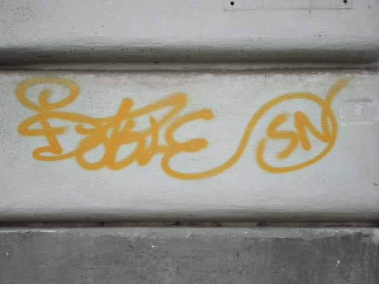
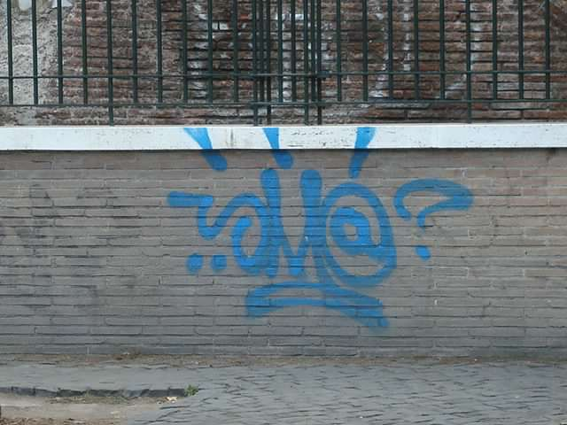
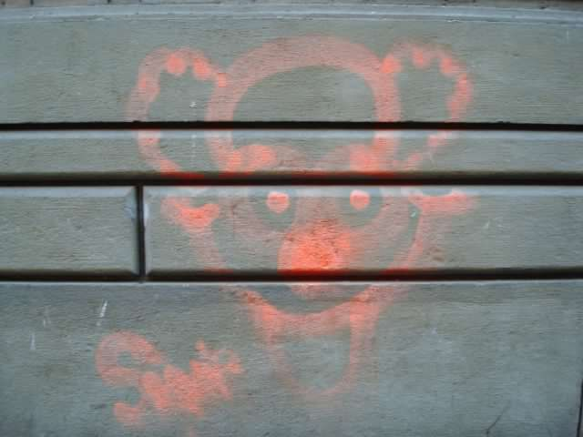

I am a Software Engineering student at Thinkful.com
I grew up on text and video games which has guided my passion for:
- Interactive content
- Visually stimulating backgrounds
- Puzzles
About me
My passion has always been for creating beautiful displays. Throughout my life this has taken many forms. Professionally I thrived performing home renovations. Taking an idea and bringing it to life evokes a special feeling of accomplishment. In my personal time I have explored multiple avenues, including: sculpting, photography, and coding. I realized Software Engineering can help bring my love of creation to a new level. While it may seem that home renovation and developing are unrelated, they do share some important characteristics.
- Bringing a vision to life
- Combining many small elements to create a whole
- Collaborating on creative details
I also have a passion for capturing 'street art'. While visiting Rome I photographed many examples of intriguing Graffiti, the
three below being some of my favorites.
Street Art
  Back to top